Semillas
Lista de semillas germinables: hacé click en la imagen para obtener información sobre el tipo de semilla, origen, método de germinación, propiedades y particularidades.
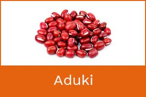
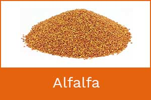
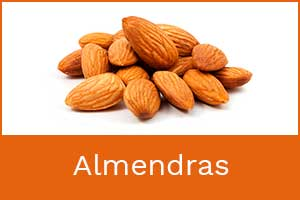
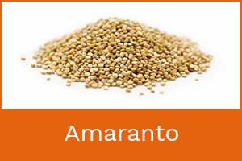
 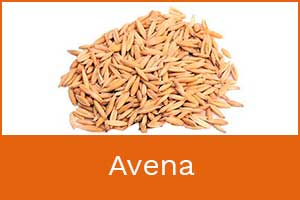
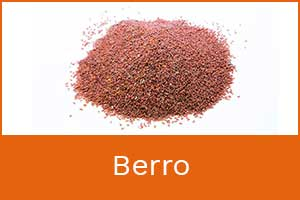
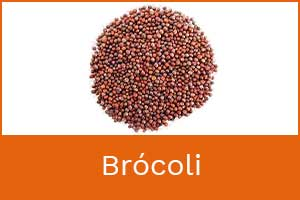
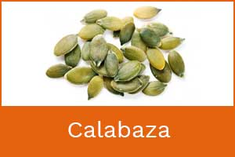
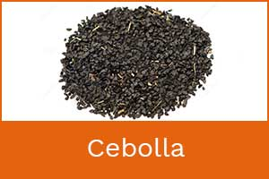
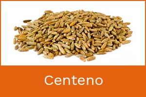
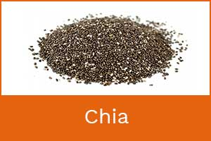
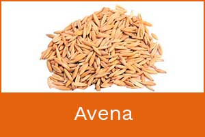
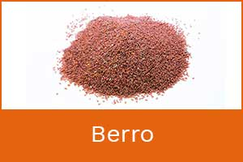
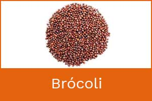
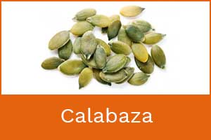
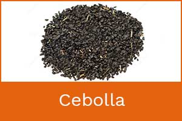
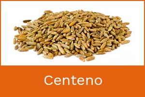
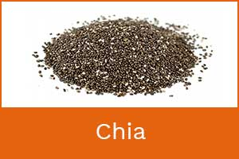
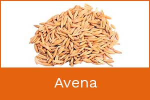
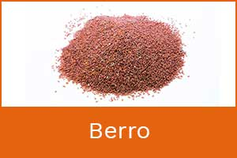
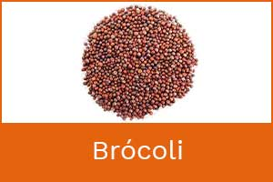
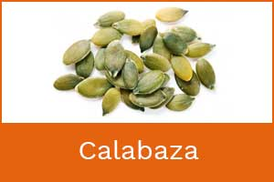
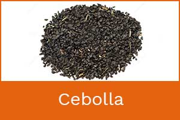
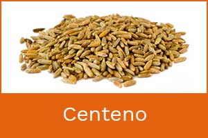
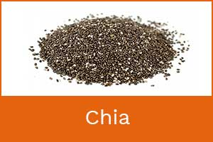